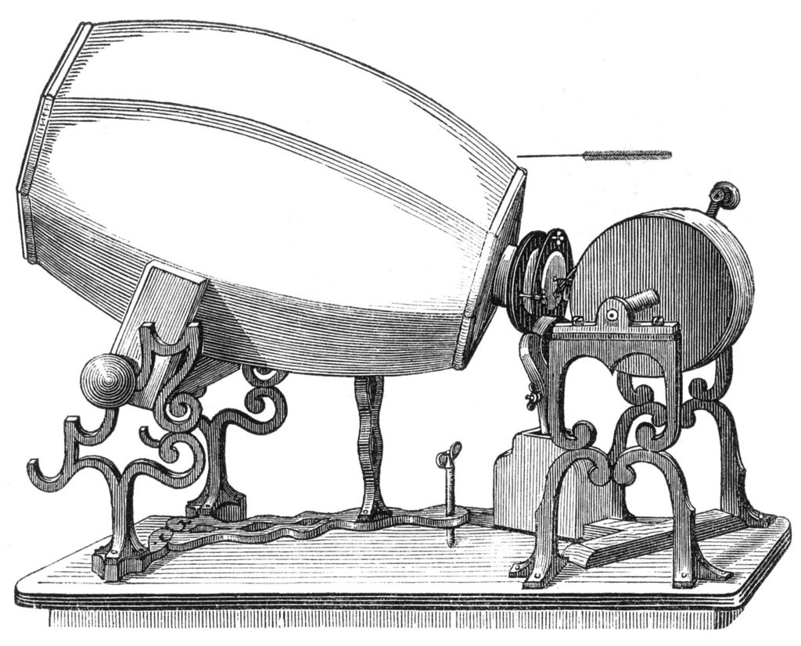
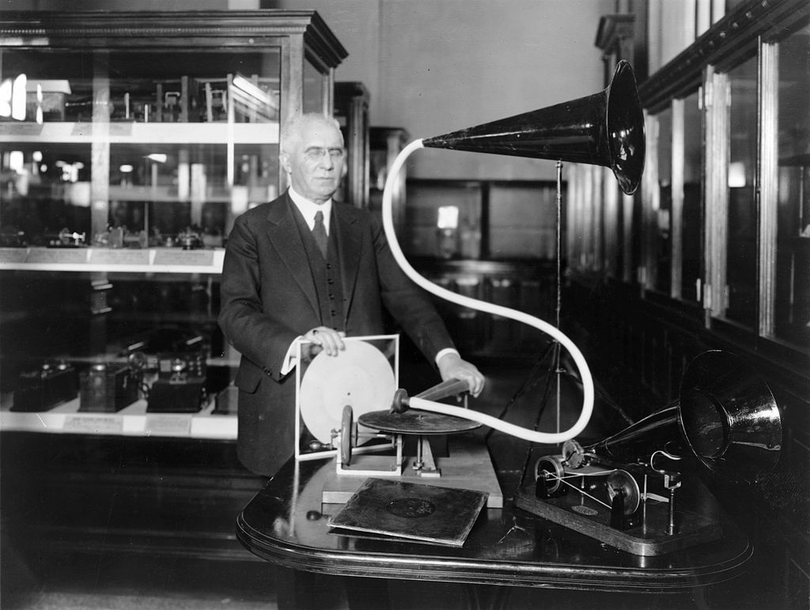
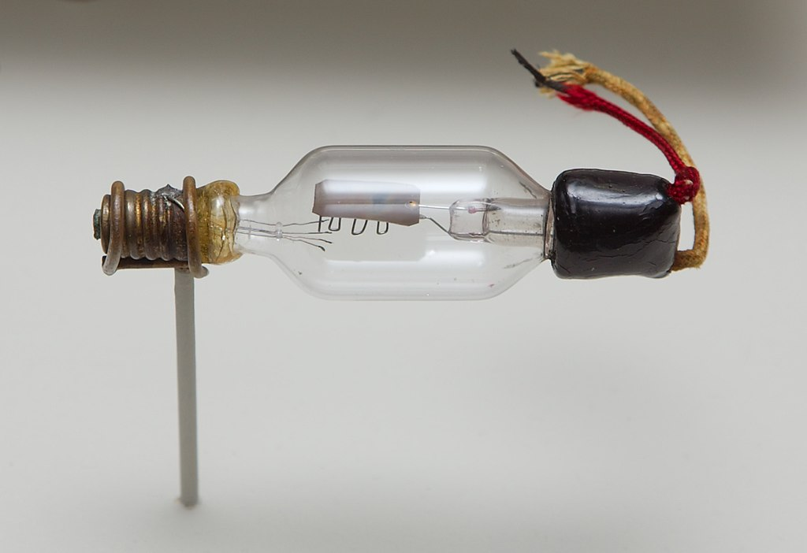
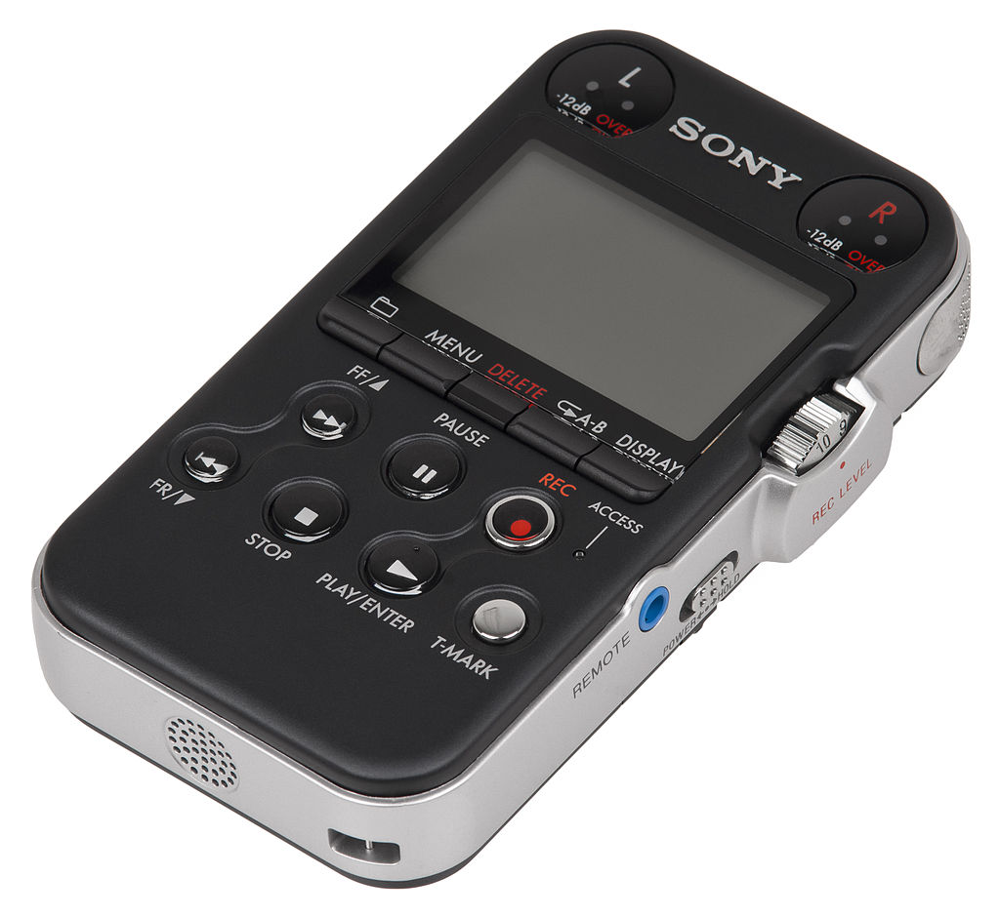

Tech: Now and Then

29 December 2020.
Many people love music. That's a fact that is guaranteed true, as almost anyone has a favorite song or favorite band that they know by heart. But, how do people hear these bands and their music? Well, they have to listen to it. People have probably heard this music through an audio recording device that is playing it back, as I'll bet most people didn't hear a band live before they heard their music. So, how do these devices play music? How is it encoded to play it perfectly every single time? How did this all start? Well, the first recorded song dated all the way back to 1857: Scott's phonautograph.
Scott de Martinville's phonautograph, which was the first recording device to not use tuning forks, but instead sound waves on glass or smoke-blackened paper.
Technically speaking, Scott's device isn't the first device to mimic sounds, as there were mechanical organs and music boxes. Those didn't actually record the sound as it was being played though, making Scott de Martinville in 1857 was the first man to create something that truly recorded sound. No-one actually used these devices to recreate sound after it was created, but it was physically possible to do so using the device. Several phonautographs were able to be played in 2008, as they were able to be transcribed to a digital audio file and play back. That's a bit ahead though, so let's go to Thomas Edison next.
Thomas Edison's phonograph/gramophone (pictured as the article photo) was created in 1887 and was able to record and reproduce sound through its transcription of sound waves into a spinning cylinder which was coated in wax, or a record. To recreate sound, the disc would simply be played with a stylus vibrating on the grooves created by the phonograph. This model only produced ever-so-slight sound, but it was still amazing to have any sort of sound play back after it was recorded. This device was shipped all over the world, wowing everyone it came across.
Emile Berliner's gramophone record, which he put into the mainstream during the 1885's-1950's.
Alexander Graham Bell was the next one to make a major advancement in phonographs, as he was able to record sound waves on a giant disc. These discs were very easy to store and transport, as they were made out of plastic. This plastic would allow them to survive high and low temperatures, and they were much more durable than wax was. They were also slightly louder than the wax cylinders. Not all instruments, like the violin or bass, was able to initially able to be played due to the frequency range of the discs not being strong enough to capture the high and low notes of these instruments. These discs did eventually become better due to the progression of technology, but then...
A 1908 model of the Audion Triode, which is burned out from time. There used to be filament in the bottom left corner of the glass, but its gone. An imprint in the glass is still visible if you look hard enough.
The Audion triode was invented by Lee De Forest in 1906, which was an electronic valve that amplified weak electronic signals that would allow longer-distance telephone calls and amplification of speeches said by powerful public officials. Its first major use was to be used to record the German U-Boats during WWI, as they were a major issue to transport and needed a way to be warned. The first electrical recording to the public would be the 1920 funeral service for The Unknown Warrior in Westminster Abbey, London. The recording was overall weak in quality, but it was a beginning for a new era.
The next major advancement was magnetic tape, which used electric audio signals to impress variations of magnetization over it. The tape was mostly found out by German audio engineers, which created the K1 Magnetophon. American audio engineer John T. Mullin improved it after capturing these models of tape recorder, which led to the Ampex Company making tape recorders for Americans. To play back sound, the tape has its signal path reversed so that sound comes out instead of going in. This kind of tape was often used for cassette tapes. This made splicing and duplicating of sound recordings much easier, as you'd just put parts of tapes together to put things together. Only a little bit of sound quality would be lost on duplication, making things easy to make once you acquired a tape to copy. Many people could easily keep track of radio broadcasts with these tapes and could save them for a decently long time.
Improvements were made to the cassette tapes, like stereo sound for songs and smaller sizes that would be able to store more than the bigger ones. The most popular device that used these small tapes was the Sony Walkman in 1979, which ran on batteries and was portable rather than having a giant tape machine that would need AC power. The small hisses generated by the tape was able to be reduced by Ray Dolby's revolutionary Dolby systems Dolby A and Dolby B. There was also 4-track tapes that tried to introduce 360 audio for the listener, but these were relatively low quality and didn't do much. This did become the eventual inspiration for Surround Sound.
This digital sound recorder from Sony compressed sound into files on the machine, meaning that they would have the exact quality from the mic.
Digital data was the next biggest expansion, as it was able to record the sounds flawlessly and was able to convert them on the fly immediately without any issues. The quality is constantly increasing due to rapid storage size expansions undergoing each and every single day, as well as the way that the songs can be made and produced with these devices. Now no physical medium is needed to give songs, as they can just be bought over the internet.
In conclusion, these devices have improved incredibly just over the span of 200 years. We used to have weak sounds that only slightly resembled the real thing, but now we have perfect recreations of songs with absolutely no sacrifices in technology. Some people prefer older technologies, as they may sound more authentic or nostalgic. For instance, many still care about vinyls, even though they're much more expensive and harder to maintain. But people keep it, as they like it. It just shows how our ways of making music have improved so much that people want the old, weaker quality recordings to re-experience their memories.